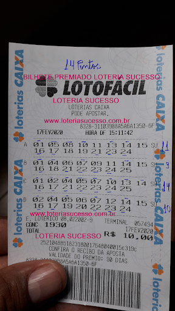
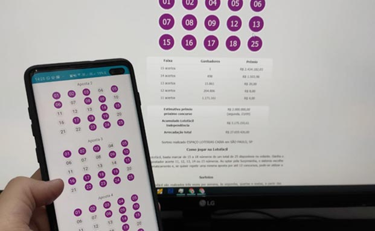

"Antônio (à esquerda) fazendo seus jogos na Lotérica" (Foto: Reprodução/G7)
Paranaense, que se mudou para Belo Horizonte aos 13 anos de idade, Antônio Ferreira, de 49 anos, trabalha há 12 anos como repositor em uma rede de autopeças.
Antônio diz que sempre viveu com um salário curto e contado, e que os bicos que fazia era o que mantinha as contas em dia.
“Era a única forma de conseguir finalizar o mês sem entrar no negativo. Meu dia de folga, era dia de bico!”, diz Antônio.
Mas o que Antônio não abria mão, era todas as quartas e sextas, ir até a Lotérica fazer seus jogos.
“Toda semana faço meu joguinho sagrado da Lotofácil. A gente quer mudar de vida, né? E a esperança é a última que morre!”, afirmou.
Antes, os jogos que Antônio fazia na Lotofácil eram com números escolhidos de forma aleatória: data de aniversário de um familiar, placa de carro dos amigos, telefone de algum conhecido. Mas nunca faturava absolutamente nada.
“A sorte não ajudava, rapaz. Eu acertava uma vez ou outra 12 pontos, mas dava só prejuízo. Mas gosto de jogar”, afirmou em entrevista ao G7.
Certo dia, Antônio viu uma propaganda em sua Rede Social de um Sistema Matemático que prometia aumentar em 80% sua quantidade de acertos na Lotofácil.
Trata-se de um sistema chamado Lotofácil System. Antônio confessa que, à primeira vista, não acreditou muito nesse sistema.
“Não sei, né? Eu nunca tinha ouvido falar de nada desse tipo. Não botei muita fé!“, disse Antônio.
Mas como havia um bom tempo que, todas as semanas, gastava um pequeno valor fazendo seus jogos e não via resultado nenhum, resolveu arriscar e comprou esse tal Lotofácil System.
“O preço é barato, rapaz! Acho que se somar todos os jogos que já paguei para fazer e não me deram 1 real de lucro, daria pra comprar mais de 50 vezes esse sistema. Então, fui lá e comprei de uma vez”, afirmou.
Desde então, os resultados de seus jogos na Lotofácil mudaram.
“Eu comprei e fiquei doido pra ver se esse negócio funcionava mesmo. Pra ter ideia, eu nem sou de usar meu cartão, só uso pra parcelar algum eletrônico. Mas paguei no cartão para me mandarem o sistema na hora, de tão ansioso que eu tava!”, disse.
E por incrível que pareça, ele afirma que os resultados vieram logo no primeiro concurso que jogou usando o Lotofácil System.
"Nos primeiros jogos que fiz usando o sistema Lotofácil System, já fiz 3 jogos de 13 pontos e uns 2 ou 3 de 12 pontos. Não acreditei!", diz.
Já na semana passada, Antônio acertou 1 jogo de 11 pontos, 1 de 13 e um de 14. Tudo no mesmo bilhete! E autorizou o G7 publicar a foto desse último bilhete ganhador.
"Bilhete ganhador do Antônio, gerado pelo Sistema Lotofácil System (concurso 1879) " (Foto: Reprodução/G7)
“Foi agora, no concurso 1879. Eu ganhei R$491 com os 14 pontos, R$20 com os 13 pontos e R$4 com 11 pontos. Tudo no mesmo bilhete!”
E desde lá, Antônio faz seus jogos em todos os concursos da Lotofácil. Diz que toda segunda, quarta e sexta está nas Lotéricas, sempre com os jogos gerados pelo Lotofácil System.
“Ah, é bom demais! Eu entro no sistema pelo meu celular mesmo, mando o sistema criar os jogos e levo pra Lotérica. Praticamente todos os concursos tem acertos. Os 14 pontos eu já to na terceira vez, e uso o sistema faz só 4 meses”, disse.
"Antônio nos mostra o funcionamento do sistema responsável pelos seus ganhos" (Foto: Reprodução/G7)
"É bem fácil de usar! Só preciso escolher 5 números que quero errar e ele faz toda a combinação estratégica para os meus acertos e ganhos."
Ele ainda afirma que 12 e 13 pontos já tá é cansado de acertar.
Eu to na esperança é dos 15 pontos. Mas com meus acertos em 14 e 13 pontos, eu já consigo pagar umas contas e ainda sobra. Virou renda extra.
Nós do G7 resolvemos tirar a prova com o Prof. Carlos Moacir, Matemático formado pelo IME-USP, que nos afirmou:
“A matemática é uma ciência exata e pode, sim, ajudar o apostador. Depender da sorte não é um bom negócio. Acredito que a sorte pode ser ‘melhorada’. Para mim, em uma loteria, 35% é investimento, 55% é estratégia e 10% é sorte”, afirmou em entrevista ao G7.
"Acho que os jogadores tem mais é que aproveitar desses sistemas que favorecem os ganhos, como o Lotofácil System", disse o professor.
Carlos analisou as fórmulas e cálculos que estão por trás do sistema Lotofácil System e aprovou:
“O desenvolvedor desse sistema é muito talentoso! É um Programador com um conhecimento fora do comum em Matemática e Algoritmos. Um gênio.”.
Exclusivo para leitores G7
Oportunidade Especial Para Nossos Leitores
Durante a produção dessa reportagem, a empresa responsável pelo Lotofácil System entrou em contato com nossa produção.
Disponibilizaram um Desconto Especial e a condição de parcelamento em até 10x no cartão de crédito (com liberação imediata) para nossos leitores que estiverem interessados em experimentar o Lotofácil System.
Somente mais 12 licenças disponíveis.
Válida até: 7 de Novembro de 2019